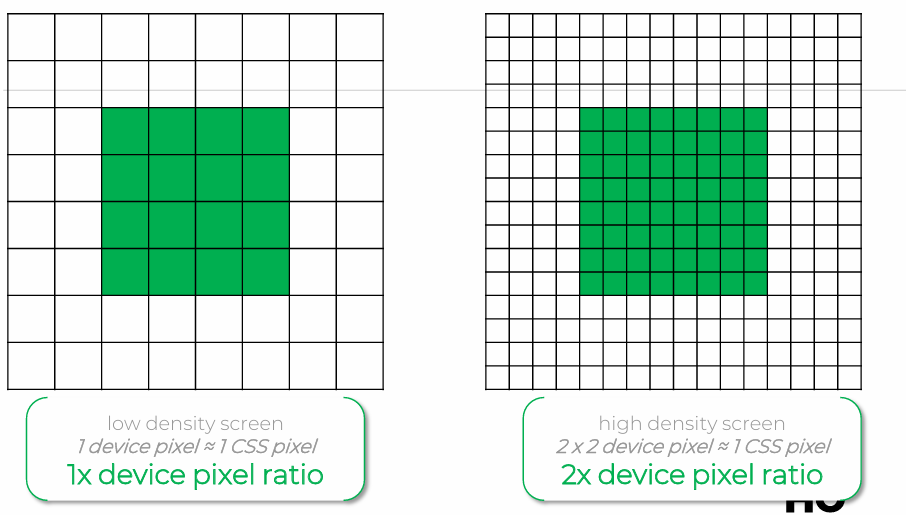

Hamburger menu
Zoals als je ziet heeft deze pagina een header/nav en deze wordt ook automatisch aangepast bij een scherm die een breedte heeft die kleiner is dan 576px
Vector VS Bitmap
Een vector als svg wordt in tegenstelling tot een bitmap afbeelding als png in codetaal geschreven waardoor je het kunt vergroten zonder kwaliteitsverlies
Pixel Ratio
De pixel ratio is hoeveel pixels worden gebruikt voor bevoorbeeld één CSS pixel te weergeven.
Resolution switching
Resolution switching is het veranderen van de resolutie van een afbeelding bij een bepaalde schermgrootte
In dit geval gebruiken we het img element

Picture
Picture is een element dat je kunt gebruiken om verschillende afbeeldingen te tonen bij verschillende schermgroottes